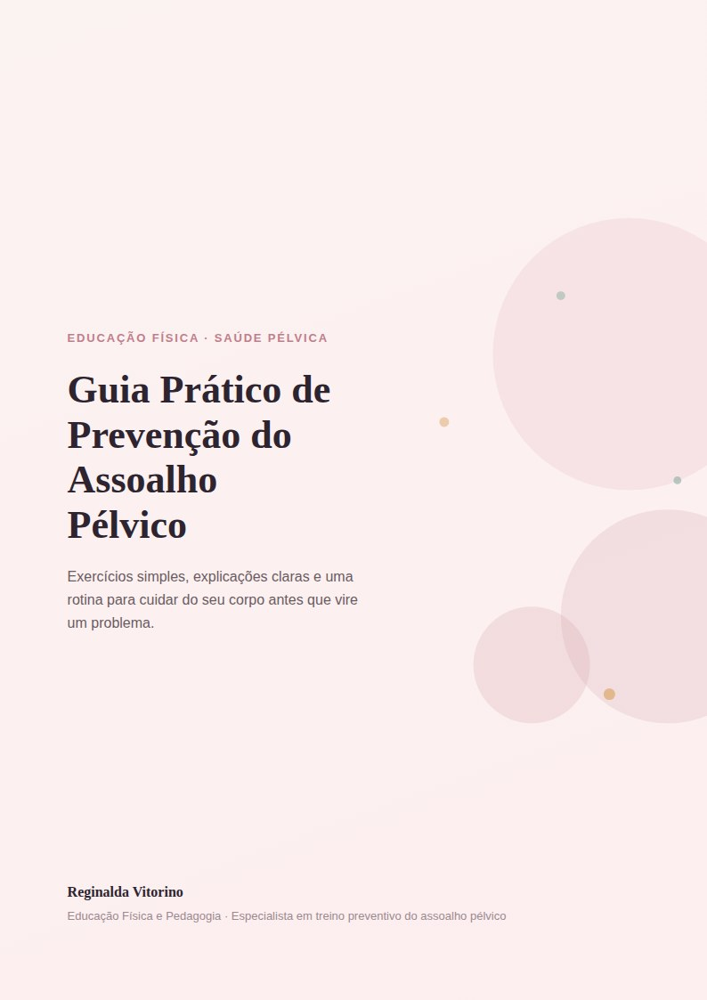

Um guia prático, com exercícios simples e uma rotina passo a passo pra fortalecer o assoalho pélvico — sem precisar sair de casa.

Fortaleça hoje o que sustenta sua saúde para o amanhã — com um guia feito pra caber na sua rotina.
Respiração diafragmática, consciência pélvica, hipopressivo básico e alongamento — explicados passo a passo, com ilustração de apoio.
Um plano de 5 semanas, começando devagar, pra você não precisar adivinhar quanto ou com que frequência praticar.
Uma lista simples pra você saber quando os exercícios preventivos bastam, e quando vale buscar uma fisioterapeuta especializada.
Formação em Educação Física e Pedagogia, com especialização em treino preventivo do assoalho pélvico. Este guia reúne o que ela ensina nas suas avaliações, num formato pra você seguir sozinha em casa.
Este é um material educativo e preventivo, não um protocolo clínico. Se você está no pós-operatório de qualquer cirurgia, ou tem incontinência urinária já diagnosticada, este guia complementa — mas não substitui — o acompanhamento da sua médica ou fisioterapeuta. Procure liberação profissional antes de iniciar os exercícios.
Não. É um material educativo e preventivo, dentro da Educação Física. Se você precisa de tratamento clínico, ele deve vir de uma fisioterapeuta ou médica.
Assim que a compra é confirmada, você recebe o link de acesso ao PDF pra baixar e guardar no seu celular ou computador.
Sim. Os exercícios são básicos e a rotina começa bem devagar, pensada pra quem está começando do zero.
O guia traz uma lista de sinais de alerta — se algum aparecer, o passo certo é buscar uma fisioterapeuta especializada antes de continuar.
Comece hoje, no seu ritmo, com um guia feito pra durar.
Quero meu guia agora